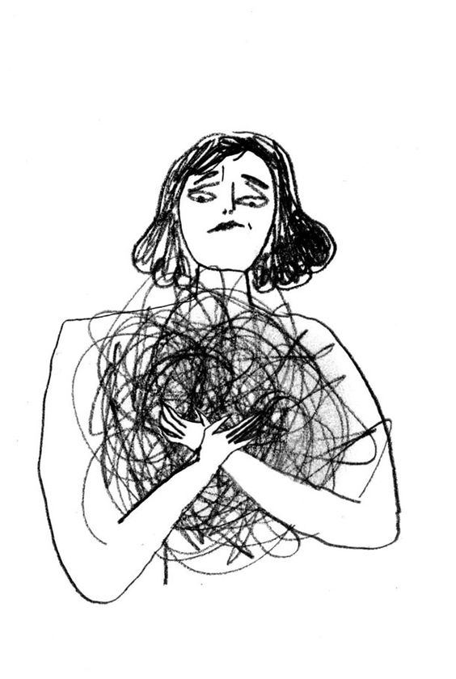

The Causes of Mental Illnesses
In every problem, there is always a cause. These causes attribute poor mental health to a person for an extended period. It includes:
- Life experiences; loneliness, trauma, abusement, negligence, discrimination, and harrassment.
- Drug and Alcohol Misuse
- Severe or Long-term Stress
